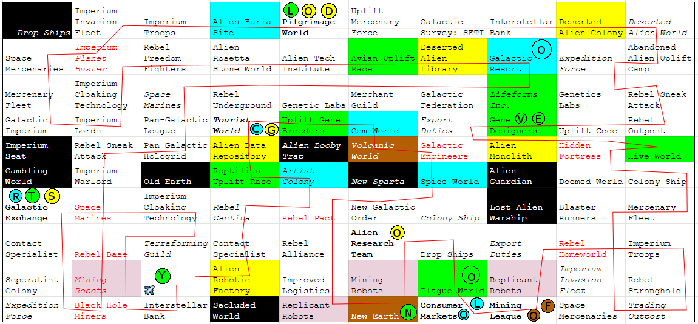
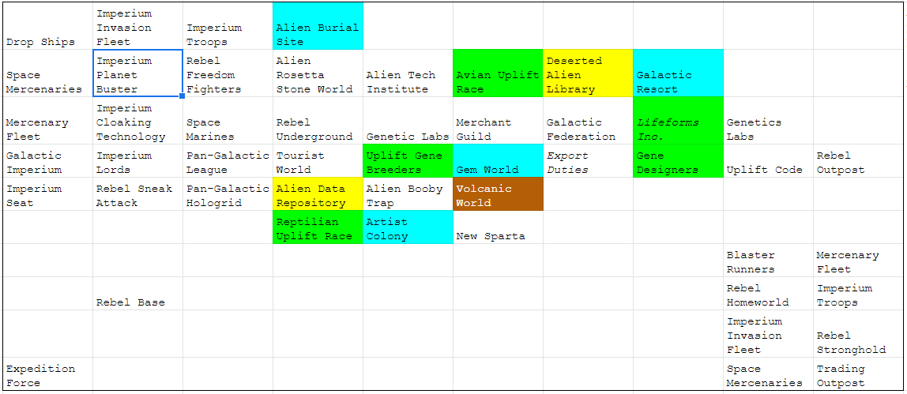
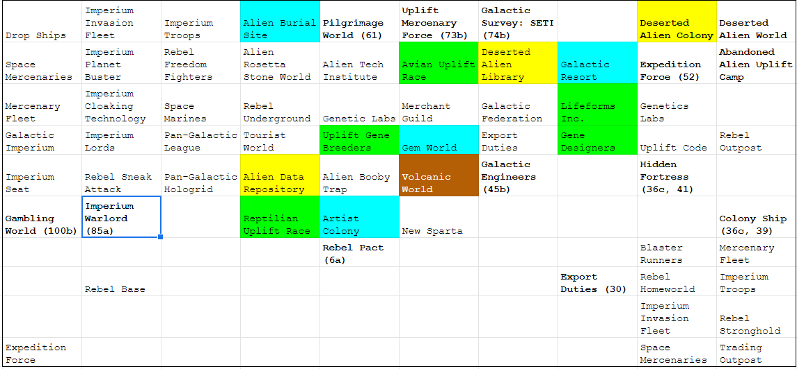
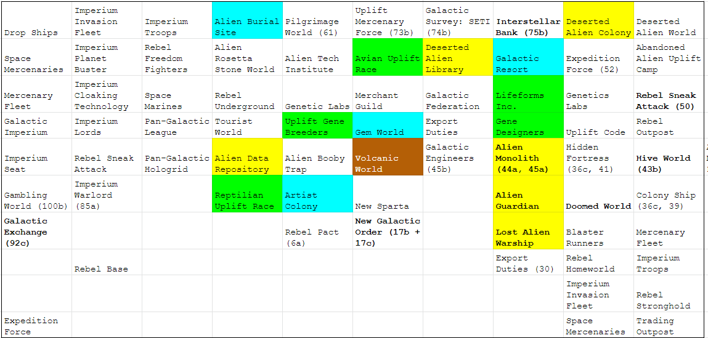
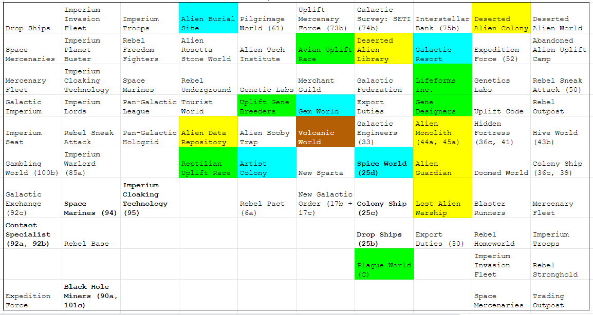
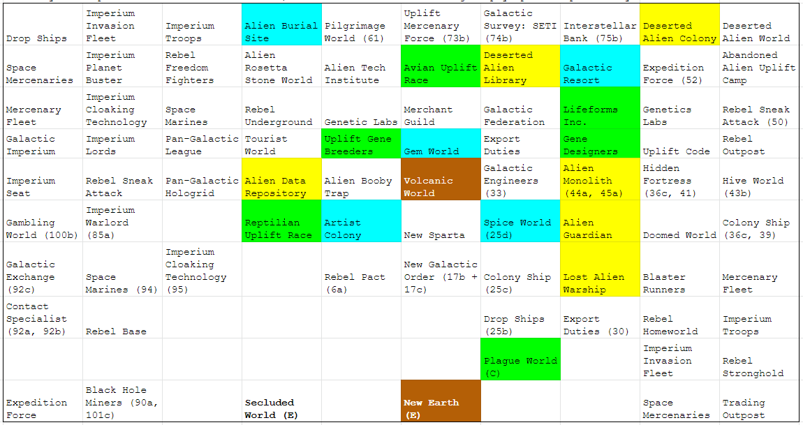
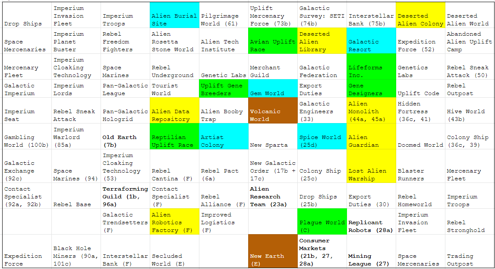

Solution: Galaxy Trucker
Answer: BLUE
Written by Seth Mulhall
This is a logic puzzle that uses Race for the Galaxy cards.
As given in the very first message, the cards are laid out in a 10x10 grid. Each message either clues a location, part of the path, or gives an image (which gives large portions of the grid). The dates indicate the passage of time, with 1 day = 1 orthogonal move on the grid.
Once we have established the grid and the path, we discover that our uncle didn't visit nine places in the galaxy. Reading the first letters of these locations in row-major order gives the message DIAGONALS.
Reading the major diagonals in the same way gives the phrase DISTANCE ITEM TRAVELED. According to the notes on business, our uncle will always pick up one good of the appropriate type from each of the eligible locations he visits. He also sells everything he can every time he visits an eligble location, starting with the eligble good he's been holding onto the longest. If we convert the number of days he held onto each good into a letter (with A=1, B=2, etc.), and order them by chronological order by good type (given in the note), we obtain the message COLOR OF NOVELTY GOODS.
Novelty goods are BLUE, which is the answer to this puzzle.
The completed grid and path are given below. Locations with red names are visited twice. Black locations are never visited. The circles indicate which good is sold, and what letter it extracts to.
Here is a possible logic path to place the grid. The path is mostly straightforward once locations are placed, but we do need some pathing logic to place everything unambiguously.
Clues are referenced by the day of the journey, starting with our uncle leaving on Day 1, and arriving home on Day 101. If more than one message occurs on a given date, we refer to them by additional letters.
First, this is the grid we get by combining all of the images. We cannot yet place the Investment Map or the Alien Monolith Pictures. Note that the Rebel Accords gives the exact distances between each of the 4 shown worlds.
Next, we fill out a few adjacencies. This also allows us to place the Investment Map.
After placing the above, we can place some more given adjacencies and Galactic Excahnge. We also place The Alien Monolith Picture.
The next step is to deduce the location of Plague World:
- Consumer Markets is adjacent to all of New Earth, Mining League, and Plague World. (21b, 26, 27)
- Plague World has 3 unplaced cards to its north. (25b, 25c, 25d)
- New Earth must be on the edge of the galaxy (21a), and Separatist Colony must be two spaces "to the left" of it (20b). If Plague World were in C10 or D10, then Separatist Colony would need to be in the same space as it, which is impossible.
- Additionally, Plague World must be an even number of spaces away from Rebel Pact (17a, 25a), so it cannot be in G10.
- Therefore, Plague World must be in one of C9 or G9.
- If Plague World is in C9, the Imperium Cloaking Technology must be in A9 (94,95)
- Additionally, New Earth must be in D10 and Secluded World must be in B10 (20a, 21a, 20b, 21b, 26)
- However, this is impossible, as now we cannot place Black Hole Miners (90a), so Plague World must be in G9
We now place a few more cards based on the deduction above.
Now it is time to determine New Earth's location. New Earth is 2 spaces away from Plague World (21b, 26), 2 spaces away from Alien Research Team (23a), 2 spaces away from Secluded World (20b, 21a), and on the edge of the galaxy (20a). The only valid placement for New Earth is F10, since H10 doesn't have enough empty spots 2 spaces away.
We now place our home planet (Galactic Trendsetters) and a number of other places.
- The following chain of adjacencies can be deduced: Black Hole Miners - (100a) Interstellar Bank - (101a) Galactic Trendsetters - (2) Alien Robotics Factory - (19b) Improved Logistics - (19a) Rebel Alliance - (18a) Rebel Pact
- Galactic Trendsetters must be in C9.
- We also note the following chain: Alien Robotics Factory - (3) Contact Specialist - (4) Rebel Cantina - (5) Rebel Pact
- Thus, D7:E9 must be filled with Alien Robotics Factory, Contact Specialist, Rebel Cantina, Improved Logistics, and Rebel Alliance, in some order.
- We know that Improved Logistics must be in E9 (20a). This places everything except Interstellar Bank.
- Interstellar Bank must be in B9 or C10. If it were in B9, then the path would take us through it three times, which is impossible. (1b, 85b, 96b, 100a, 101c)
- Therefore, Interstellar Bank is in C10, and we have the following grid so far.
We can place almost everything else.
Finally, the last few cards use some pathing logic.
- We are currently missing Separatist Colony, 2 Mining Robots, and a Replicant Robots.
- We know that he changed ships at Separtist Colony (101b) and he visited Black Hole Miners twice, with two different ships (89b, 99b). The path during moves 89-99 does not visit E10 or F9 (92c, among others), putting Separatist Colony in either A9 or B9. However, he visits B9 two times (85b, 96b), and he only visits Separatist Colony once (101b). Separatist Colony must be in A9
- The Mining Robots are then in B9 and F9 (28b), leaving Replicant Robots to be placed in E10.
Author’s Notes
In the original draft of this puzzle, rules for Race for the Galaxy were provided in lieu of the 'Notes on Business'. Considering how large the logic puzzle is, we decided we didn't need you to learn the rules, then use a couple clues in the already long feed to determine extraction. Thank goodness we have editors to help me trim my overly complex ideas!
Early on, Race for the Galaxy was proposed while this puzzle had a very bland title. I was so excited that there was going to be a puzzle titled Race for the Galaxy that wasn't about the card game, while I was writing a puzzle about Race for the Galaxy that wasn't titled that. I think we've gotten to the point where we just like messing with the solvers (see Word Search and o ea/Wrd Srch from 2018).
A couple days before the hunt, we were discussing a hypothetical round of puzzles that were named after board games, but used the mechanics of an entirely different game. At the time, this puzzle was called Galactic Race, and I was inspired to change the name to Galaxy Trucker. Everyone else agreed, so here we are.